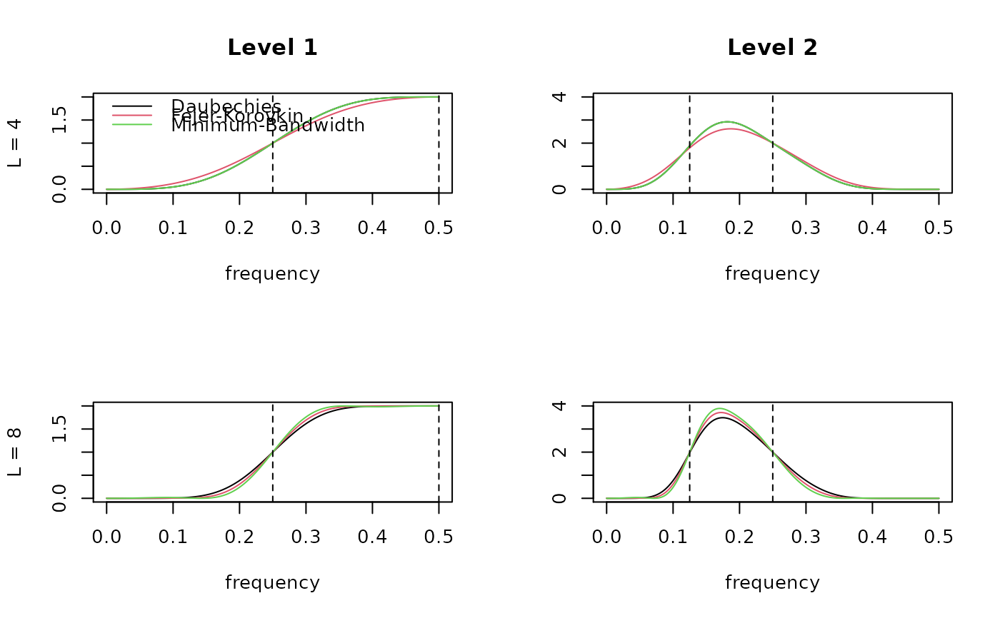

squared.gain.RdProduces the modulus squared of the Fourier transform for a given filtering sequence.
squared.gain(wf.name, filter.seq = "L", n = 512)| wf.name | Character string of wavelet filter. |
|---|---|
| filter.seq | Character string of filter sequence. |
| n | Length of zero-padded filter. Frequency resolution will be
|
Squared gain function.
Uses cascade subroutine to compute the squared gain function
from a given filtering sequence.
B. Whitcher
par(mfrow=c(2,2))
f.seq <- "H"
plot(0:256/512, squared.gain("d4", f.seq), type="l", ylim=c(0,2),
xlab="frequency", ylab="L = 4", main="Level 1")
lines(0:256/512, squared.gain("fk4", f.seq), col=2)
lines(0:256/512, squared.gain("mb4", f.seq), col=3)
abline(v=c(1,2)/4, lty=2)
legend(-.02, 2, c("Daubechies", "Fejer-Korovkin", "Minimum-Bandwidth"),
lty=1, col=1:3, bty="n", cex=1)
f.seq <- "HL"
plot(0:256/512, squared.gain("d4", f.seq), type="l", ylim=c(0,4),
xlab="frequency", ylab="", main="Level 2")
lines(0:256/512, squared.gain("fk4", f.seq), col=2)
lines(0:256/512, squared.gain("mb4", f.seq), col=3)
abline(v=c(1,2)/8, lty=2)
f.seq <- "H"
plot(0:256/512, squared.gain("d8", f.seq), type="l", ylim=c(0,2),
xlab="frequency", ylab="L = 8", main="")
lines(0:256/512, squared.gain("fk8", f.seq), col=2)
lines(0:256/512, squared.gain("mb8", f.seq), col=3)
abline(v=c(1,2)/4, lty=2)
f.seq <- "HL"
plot(0:256/512, squared.gain("d8", f.seq), type="l", ylim=c(0,4),
xlab="frequency", ylab="", main="")
lines(0:256/512, squared.gain("fk8", f.seq), col=2)
lines(0:256/512, squared.gain("mb8", f.seq), col=3)
abline(v=c(1,2)/8, lty=2)
